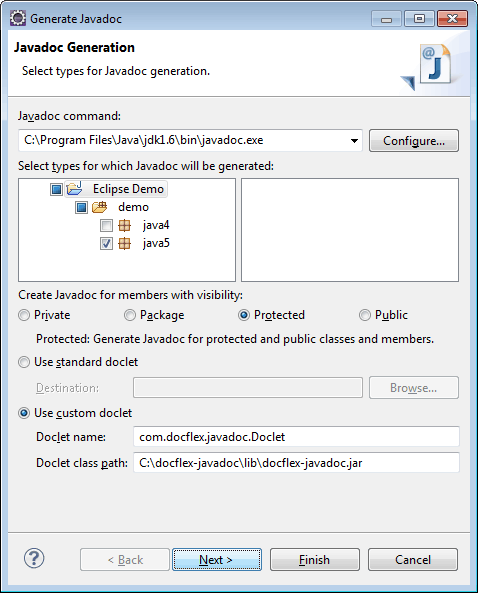

Here is an example.
Let's suppose, we want to generate a framed HTML documentation using
FramedDoc.tpl template
by the Java source package 'java5' contained in 'demo' directory
of DocFlex/Javadoc
installation at C:\docflex-javadoc.
Here is a simple Windows command file that launches such a generation:
The following is an equivalent Ant
set DFH=C:\docflex-javadocjavadoc-J-Xmx512m -sourcepath %DFH%\demo -d %DFH%\out -docletpath %DFH%\lib\docflex-javadoc.jar -doclet com.docflex.javadoc.Doclet -template %DFH%\templates\javadoc\FramedDoc.tpl -p:windowTitle "DocFlex/Doclet Demo" -p:docTitle "DocFlex Ant Demo" -p:include.tag.custom "todo:a:To Do:" -p:include.tag.custom "prj\:type:opt:Project Type:" -format HTML -nodialog -launchviewer=false java5
build.xml file doing the same:
build.xml
|
<?xml version="1.0"?>
<project basedir="." name="DocFlex Ant Demo">
<!-- the location of DocFlex/Javadoc home directory -->
<property name="DFH" value="C:/docflex-javadoc"/>
<target name="demo">
<!--
Specifying Javadoc task. The 'maxmemory' attribute sets the maximum heap size available to the Java VM running Javadoc. --> <javadoc maxmemory="512m" sourcepath="${DFH}/demo" destdir="${DFH}/out">
<!-- specifying the doclet -->
<doclet name="com.docflex.javadoc.Doclet" path="${DFH}/lib/docflex-javadoc.jar">
<!-- specifying the doclet command-line parameters -->
<!-- the main template -->
<param name="-template" value="${DFH}/templates/JavadocPro/FramedDoc.tpl"/>
<!-- template parameters -->
<param name="-p:windowTitle" value="DocFlex/Doclet Demo"/>
<param name="-p:docTitle" value="DocFlex Ant Demo"/>
<param name="-p:include.tag.custom" value="todo:a:To Do:"/>
<param name="-p:include.tag.custom" value="prj\:type:opt:Project Type:"/>
<!-- the output format -->
<param name="-format" value="HTML"/>
<!-- supress showing up the doclet GUI -->
<param name="-nodialog"/>
<!-- do not launch documentation viewer -->
<param name="-launchviewer=false"/>
</doclet>
<!-- specifying the Java source package to document -->
<package name="java5.*"/>
</javadoc>
</target>
</project>
|
To run that build.xml file, you can use a Windows BAT specified like the following:
(Note, the BAT should be started from the directory containing theset ANT_HOME=C:\apache-ant set PATH=%ANT_HOME%\bin;%PATH% set JAVA_HOME=C:\jdk1.6 call %ANT_HOME%\bin\ant.bat demo
build.xml file!)
The support of custom doclets (in general) by the Maven Javadoc Plugin seems to be rather erratic. So, it may take some efforts to get the DocFlex Doclet work with a particular Maven version. Here is what we have found.
<docletPath> element, which is provided by the
Maven Javadoc Plugin
to specify the file pathname of the custom doclet, actually doesn't work.
Instead, you need to install the docflex-javadoc.jar (or docflex-doclet.jar
in DocFlex/Doclet edition)
into the Maven repository. But you cannot do it directly!
Anything stored in the Maven repository is associated with a certain artifact. Each artifact is identified by three things: { groupId, artifactId, version }. Those properties need to be specified anywhere you want to use a feature associated with that artifact. (Maven itself avoids working with direct file locations!)
With DocFlex Doclet, we shall associate the following artifact identifiers (the version will be the last DocFlex/Javadoc version number):
Then, to install DocFlex Doclet in the Maven repository you can use the following command:
groupId = docflexartifactId = docflex-docletversion = 1.6.0
Now, you can configure the Maven Javadoc Plugin in your project POM file like the following:
mvninstall:install-file -Dfile=C:\docflex-javadoc\lib\docflex-javadoc.jar -DgroupId=docflex -DartifactId=docflex-doclet -Dversion=1.6.0 -Dpackaging=jar
pom.xml
|
<project>
...
<reporting>
<plugins>
<!-- Configure Maven Javadoc plugin -->
<plugin>
<groupId>org.apache.maven.plugins</groupId>
<artifactId>maven-javadoc-plugin</artifactId>
<configuration>
<!-- The maximum heap size available to JVM when running Javadoc -->
<maxmemory>512m</maxmemory>
<!-- Using DocFlex Doclet -->
<doclet>com.docflex.javadoc.Doclet</doclet>
<docletArtifact>
<groupId>docflex</groupId>
<artifactId>docflex-doclet</artifactId>
<version>1.6.0</version>
</docletArtifact>
<!-- Specifying command-line parameters for DocFlex Doclet -->
<additionalparam>
<!-- The main template -->
-template C:/docflex-javadoc/templates/JavadocPro/FramedDoc.tpl
<!-- Pass template parameters -->
-p:windowTitle "DocFlex Doclet Output"
-p:docTitle "DocFlex/Javadoc & Maven Integration Demo" <!-- The output format -->
-format HTML
<!-- Supress showing up the doclet GUI -->
-nodialog
<!-- Do not launch documentation viewer -->
-launchviewer=false
<!-- Tell DocFlex Doclet the location of the output directory -->
-d ${project.build.directory}/site/docflex_doclet_output
</additionalparam>
<!-- Tell Maven the output directory name -->
<destDir>docflex_doclet_output</destDir>
<!-- For the project-reports page -->
<name>DocFlex Doclet Output</name>
<description>
A Java API documentation generated with DocFlex Doclet.
</description>
</configuration>
</plugin>
</plugins>
</reporting>
...
</project>
|
<docletPath> element, which specifies
the custom doclet class pathname, does work!
So, installing DocFlex Doclet as an “artifact” in the Maven repository is not necessary any longer and the project POM file becomes a bit simpler.
| Yet, the new versions of Maven Javadoc Plugin are not without oddities too. For instance, now Maven always emits some Standard Doclet options even in the case of custom doclet, as well as a -link option, which in its argument provides no URL but a local file pathname. So, more special efforts were needed to work around all this! See also the note to Setting template parameters via Standard Doclet options for that matter. |
Here is a sample project POM file that did work (tested with Maven 2.2.1 and Maven 3.0.4):
pom.xml
|
<project>
...
<reporting>
<plugins>
<!-- Configure Maven Javadoc plugin -->
<plugin>
<groupId>org.apache.maven.plugins</groupId>
<artifactId>maven-javadoc-plugin</artifactId>
<configuration>
<!-- The maximum heap size available to JVM when running Javadoc -->
<maxmemory>512m</maxmemory>
<!-- Using DocFlex Doclet -->
<doclet>com.docflex.javadoc.Doclet</doclet>
<docletPath>C:/docflex-javadoc/lib/docflex-javadoc.jar</docletPath>
<!-- Specifying command-line parameters for DocFlex Doclet -->
<additionalparam>
<!-- The main template -->
-template C:/docflex-javadoc/templates/JavadocPro/FramedDoc.tpl
<!-- Pass template parameters -->
-p:windowTitle "DocFlex Doclet Output"
-p:docTitle "DocFlex/Javadoc & Maven Integration Demo" -p:include.tag.custom "todo:a:To Do:" -p:include.tag.custom "prj\\:type:opt:Project Type:" <!-- The output format -->
-format HTML
<!-- Supress showing up the doclet GUI -->
-nodialog
<!-- Do not launch documentation viewer -->
-launchviewer=false
<!-- Tell DocFlex Doclet the location of the output directory -->
-d ${project.build.directory}/site/docflex_doclet_output
</additionalparam>
<!-- Tell Maven the output directory name -->
<destDir>docflex_doclet_output</destDir>
<!-- For the project-reports page -->
<name>DocFlex Doclet Output</name>
<description>
A Java API documentation generated with DocFlex Doclet.
</description>
</configuration>
</plugin>
</plugins>
</reporting>
...
</project>
|
The complete working example is included in both DocFlex/Javadoc and DocFlex/Doclet archives prepared for downloads.
First, select in the Eclipse main menu the “Project | Generate Javadoc...” item. The following dialog will show up:
Make sure the following settings are specified:
com.docflex.javadoc.Doclet
docflex-javadoc.jar or docflex-doclet.jar
(depending on the edition).
This file is located in the 'lib' directory of your
DocFlex/Javadoc
(or DocFlex/Doclet)
installation.
In this dialog, check the following fields:
Note: If you leave this field empty, Javadoc
(that is the DocFlex Doclet)
may slow down very much, especially on a big project, and you may get eventually
java.lang.OutOfMemoryError exception!
In particular, with the -d option you should specify the output directory for the generated documentation.
Also, unless -nodialog option is specified directly, the DocFlex Doclet will launch the Doclet GUI over Eclipse. (In fact, since Javadoc is run by a different JVM, the Doclet GUI will be completely independent on Eclipse).
Remember also that all missing options that the DocFlex Doclet may need (including template parameters) will be taken from the generator.config created when the Doclet GUI was invoked the last time. (So, you should not wonder, how DocFlex Doclet knows some specific settings you did not provide to it.)
To use DocFlex Doclet with a particular system, basically, you need to know how to specify the following settings: